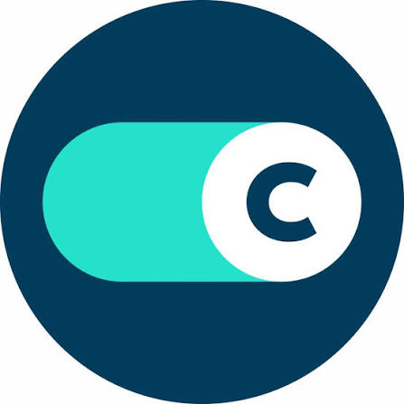

Hi, I'm CHARLES JAMES “CJ” J. WALET
4th-year Information Technology student at Quezon City University, passionate about software development, web technologies, and SQL database management. Eager to apply my skills in real-world projects and contribute to collaborative engineering teams.
const cj = {
name: "CHARLES JAMES “CJ” J. WALET",
school: "Quezon City University",
focus: ["Web Development", "SQL", "Full Stack"],
location: "Quezon City, Philippines",
status: "Looking for opportunities"
};About Me
I'm CHARLES JAMES “CJ” J. WALET, a 4th-year BSIT student at Quezon City University based in Quezon City, Philippines. I'm passionate about building web applications, managing databases, and learning modern development frameworks. I'm actively looking for internship and entry-level opportunities to grow as a developer.
Web Development
HTML5, CSS3, JavaScript, React, Vite, Tailwind CSS, TypeScript, Bootstrap
Database Management
SQL, MySQL, PostgreSQL, Supabase, Prisma ORM
Backend Development
Node.js, NestJS, npm, Postman, REST APIs
Tools & Workflow
Git, GitHub, VS Code, Terminal, AWS Amplify, Vercel
Skills
Hover a discipline to explore the technologies behind the work.
Work & Internship Experience

IT Technician (Intern)
Concentrix · SM Megamall
Concentrix SM Megamall
Active IT Operations Intern responsible for maintaining workstation uptime, resolving hardware/software issues, and managing computer deployments.
Projects
AI Reviewer
A web application for students that generates AI-powered study reviewers, flashcards, and quizzes from uploaded files including PDF, PPTX, DOCX, and images. Built as a capstone project leveraging modern full-stack technologies and the Anthropic Claude API.
Open-Source Footprint

cjw21332
Public repositories
BSIT 4th Year Student
Contributions · Sep 2025 – Sep 19, 2026
Loading contributions…Certifications & Courses
AWS & Cloud Skill Builder Certifications
Amazon Web Services Official Training & Exam Prep Courses
Foundations of Prompt Engineering
AWS Training & Certification
Click to view full certificate document
View CertificateAWS ML Engineer – Associate (MLA-C01) Prep
AWS Training & Certification
Click to view full certificate document
View CertificateIntro to Generative AI: Art of the Possible
AWS Training & Certification
Click to view full certificate document
View CertificateAWS Amplify – Getting Started
AWS Training & Certification
Click to view full certificate document
View CertificateAmazon Q Developer – Getting Started
AWS Training & Certification
Click to view full certificate document
View CertificateAmazon Location Service – Getting Started
AWS Training & Certification
Click to view full certificate document
View CertificateAWS Developer – Associate (DVA-C02) Prep
AWS Training & Certification
Click to view full certificate document
View CertificateAcademic Seminars & Research Workshops
Quezon City University Institutional Certifications
Fundamentals of Research & Capstone Writing
Quezon City University
Click to view full certificate document
View CertificateCyberSafety Seminar
Quezon City University
Click to view full certificate document
View CertificateEducation
Bachelor of Science in Information Technology
Quezon City University
Quezon City University
Focusing on software development, web technologies, and database management. Currently building an AI-powered study reviewer capstone project using React, Node.js, Prisma, PostgreSQL, and Claude API.

High School Education (SHS & JHS)
San Francisco High School
San Francisco High School
Senior High School (STEM Strand, 2021 – 2023)
Specialized in Science, Technology, Engineering, and Mathematics.
Junior High School (2017 – 2021)
Get In Touch
I'm currently looking for internship and entry-level opportunities. Feel free to reach out if you'd like to collaborate or have a project in mind!